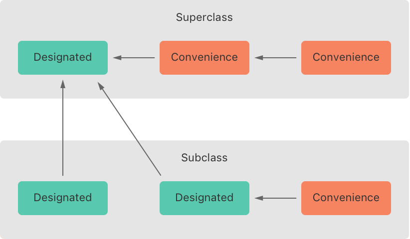
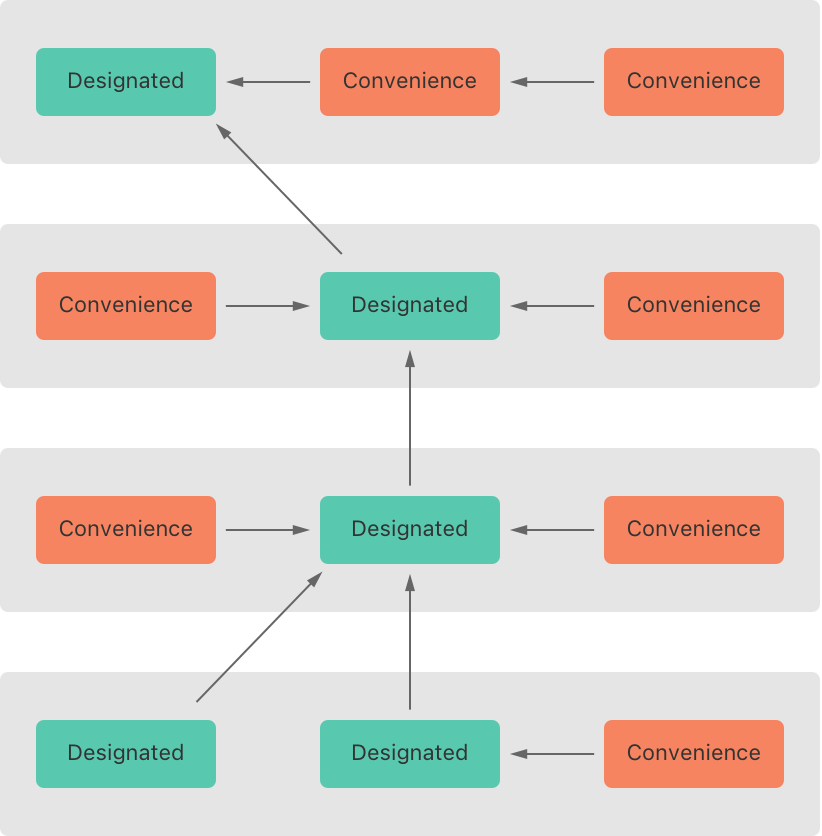
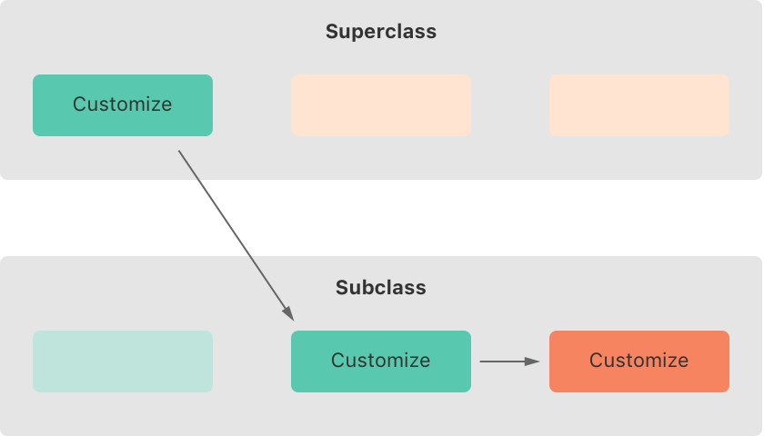
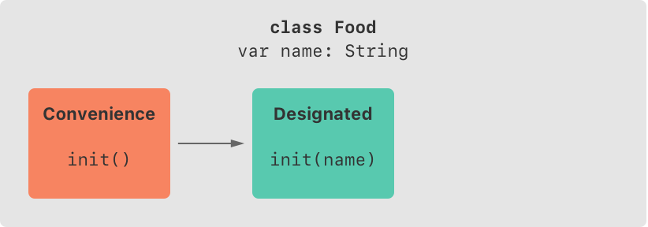
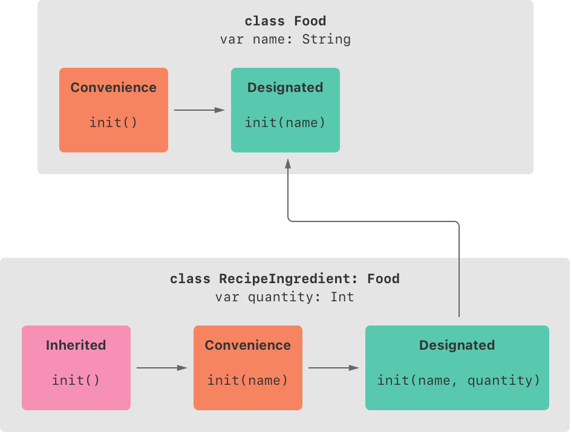
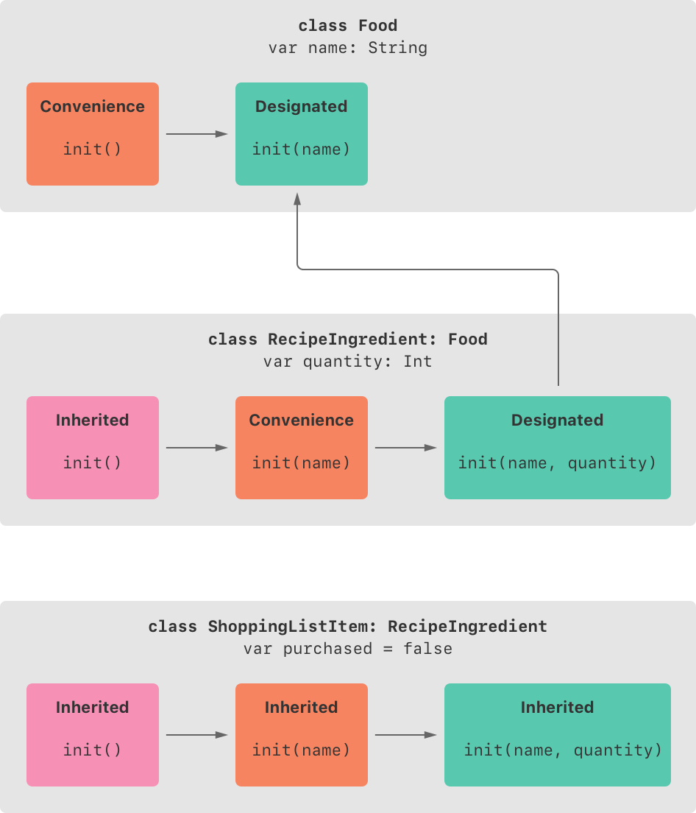
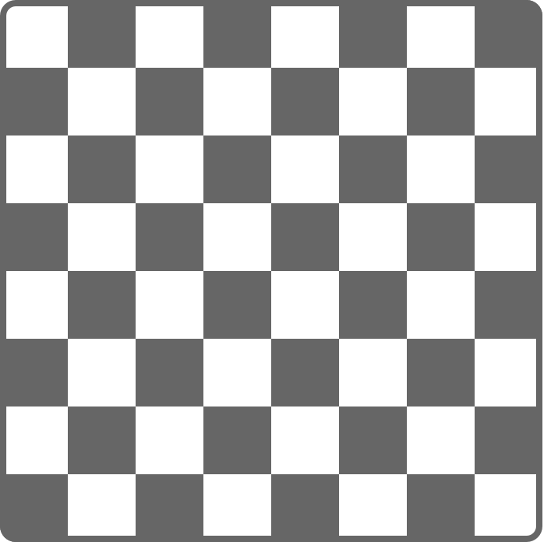

构造过程是使用类、结构体或枚举类型的实例之前的准备过程。在新实例使用前有个过程是必须的，它包括设置实例中每个存储属性的初始值和执行其他必须的设置或构造过程。
你要通过定义构造器来实现构造过程，它就像用来创建特定类型新实例的特殊方法。与 Objective-C 中的构造器不同，Swift 的构造器没有返回值。它们的主要任务是保证某种类型的新实例在第一次使用前完成正确的初始化。
类的实例也可以通过实现析构器来执行它释放之前自定义的清理工作。想了解更多关于析构器的内容，请参考 析构过程。
类和结构体在创建实例时，必须为所有存储型属性设置合适的初始值。存储型属性的值不能处于一个未知的状态。
你可以在构造器中为存储型属性设置初始值，也可以在定义属性时分配默认值。以下小节将详细介绍这两种方法。
注意
当你为存储型属性分配默认值或者在构造器中设置初始值时，它们的值是被直接设置的，不会触发任何属性观察者。
构造器在创建某个特定类型的新实例时被调用。它的最简形式类似于一个不带任何形参的实例方法，以关键字 init 命名：
xxxxxxxxxxinit() { // 在此处执行构造过程}下面例子中定义了一个用来保存华氏温度的结构体 Fahrenheit，它拥有一个 Double 类型的存储型属性 temperature：
xxxxxxxxxxstruct Fahrenheit { var temperature: Double init() { temperature = 32.0 }}var f = Fahrenheit()print("The default temperature is \(f.temperature)° Fahrenheit")// 打印“The default temperature is 32.0° Fahrenheit”这个结构体定义了一个不带形参的构造器 init，并在里面将存储型属性 temperature 的值初始化为 32.0（华氏温度下水的冰点）。
如前所述，你可以在构造器中为存储型属性设置初始值。同样，你也可以在属性声明时为其设置默认值。
注意
如果一个属性总是使用相同的初始值，那么为其设置一个默认值比每次都在构造器中赋值要好。两种方法的最终结果是一样的，只不过使用默认值让属性的初始化和声明结合得更紧密。它能让你的构造器更简洁、更清晰，且能通过默认值自动推导出属性的类型；同时，它也能让你充分利用默认构造器、构造器继承等特性，后续章节将讲到。
你可以通过在属性声明时为 temperature 提供默认值来使用更简单的方式定义结构体 Fahrenheit ：
xxxxxxxxxxstruct Fahrenheit { var temperature = 32.0}你可以通过输入形参和可选属性类型来自定义构造过程，也可以在构造过程中分配常量属性。这些都将在后面章节中提到。
自定义构造过程时，可以在定义中提供构造形参，指定其值的类型和名字。构造形参的功能和语法跟函数和方法的形参相同。
下面例子中定义了一个用来保存摄氏温度的结构体 Celsius。它定义了两个不同的构造器：init(fromFahrenheit:) 和 init(fromKelvin:)，二者分别通过接受不同温标下的温度值来创建新的实例：
xstruct Celsius { var temperatureInCelsius: Double init(fromFahrenheit fahrenheit: Double) { temperatureInCelsius = (fahrenheit - 32.0) / 1.8 } init(fromKelvin kelvin: Double) { temperatureInCelsius = kelvin - 273.15 }}
let boilingPointOfWater = Celsius(fromFahrenheit: 212.0)// boilingPointOfWater.temperatureInCelsius 是 100.0let freezingPointOfWater = Celsius(fromKelvin: 273.15)// freezingPointOfWater.temperatureInCelsius 是 0.0第一个构造器拥有一个构造形参，其实参标签为 fromFahrenheit，形参命名为 fahrenheit；第二个构造器也拥有一个构造形参，其实参标签为 fromKelvin，形参命名为 kelvin。这两个构造器都将单一的实参转换成摄氏温度值，并保存在属性 temperatureInCelsius 中。
跟函数和方法形参相同，构造形参可以同时使用在构造器里使用的形参命名和一个外部调用构造器时使用的实参标签。
然而，构造器并不像函数和方法那样在括号前有一个可辨别的方法名。因此在调用构造器时，主要通过构造器中形参命名和类型来确定应该被调用的构造器。正因如此，如果你在定义构造器时没有提供实参标签，Swift 会为构造器的每个形参自动生成一个实参标签。
以下例子中定义了一个结构体 Color，它包含了三个常量：red、green 和 blue。这些属性可以存储 0.0 到 1.0 之间的值，用来表明颜色中红、绿、蓝成分的含量。
Color 提供了一个构造器，为红蓝绿提供三个合适 Double 类型的形参命名。Color 也提供了第二个构造器，它只包含名为 white 的 Double 类型的形参，它为三个颜色的属性提供相同的值。
xxxxxxxxxxstruct Color { let red, green, blue: Double init(red: Double, green: Double, blue: Double) { self.red = red self.green = green self.blue = blue } init(white: Double) { red = white green = white blue = white }}两种构造器都能通过为每一个构造器形参提供命名值来创建一个新的 Color 实例：
xxxxxxxxxxlet magenta = Color(red: 1.0, green: 0.0, blue: 1.0)let halfGray = Color(white: 0.5)注意，如果不通过实参标签传值，这个构造器是没法调用的。如果构造器定义了某个实参标签，就必须使用它，忽略它将导致编译期错误：
xxxxxxxxxxlet veryGreen = Color(0.0, 1.0, 0.0)// 报编译期错误-需要实参标签如果你不希望构造器的某个形参使用实参标签，可以使用下划线（_）来代替显式的实参标签来重写默认行为。
下面是之前 形参的构造过程 中 Celsius 例子的扩展，多了一个用已经的摄氏表示的 Double 类型值来创建新的 Celsius 实例的额外构造器：
xxxxxxxxxxstruct Celsius { var temperatureInCelsius: Double init(fromFahrenheit fahrenheit: Double) { temperatureInCelsius = (fahrenheit - 32.0) / 1.8 } init(fromKelvin kelvin: Double) { temperatureInCelsius = kelvin - 273.15 } init(_ celsius: Double){ temperatureInCelsius = celsius }}
let bodyTemperature = Celsius(37.0)// bodyTemperature.temperatureInCelsius 为 37.0构造器调用 Celsius(37.0) 意图明确，不需要实参标签。因此适合使用 init(_ celsius: Double) 这样的构造器，从而可以通过提供未命名的 Double 值来调用构造器。
如果你自定义的类型有一个逻辑上允许值为空的存储型属性——无论是因为它无法在初始化时赋值，还是因为它在之后某个时机可以赋值为空——都需要将它声明为 可选类型。可选类型的属性将自动初始化为 nil，表示这个属性是特意在构造过程设置为空。
下面例子中定义了类 SurveyQuestion，它包含一个可选 String 属性 response：
xxxxxxxxxxclass SurveyQuestion { var text: String var response: String? init(text: String) { self.text = text } func ask() { print(text) }}
let cheeseQuestion = SurveyQuestion(text: "Do you like cheese?")cheeseQuestion.ask()// 打印“Do you like cheese?”cheeseQuestion.response = "Yes, I do like cheese."调查问题的答案在询问前是无法确定的，因此我们将属性 response 声明为 String? 类型，或者说是 “可选类型 String“。当 SurveyQuestion 的实例初始化时，它将自动赋值为 nil，表明“暂时还没有字符“。
你可以在构造过程中的任意时间点给常量属性赋值，只要在构造过程结束时它设置成确定的值。一旦常量属性被赋值，它将永远不可更改。
注意
对于类的实例来说，它的常量属性只能在定义它的类的构造过程中修改；不能在子类中修改。
你可以修改上面的 SurveyQuestion 示例，用常量属性替代变量属性 text，表示问题内容 text 在 SurveyQuestion 的实例被创建之后不会再被修改。尽管 text 属性现在是常量，我们仍然可以在类的构造器中设置它的值：
xxxxxxxxxxclass SurveyQuestion { let text: String var response: String? init(text: String) { self.text = text } func ask() { print(text) }}let beetsQuestion = SurveyQuestion(text: "How about beets?")beetsQuestion.ask()// 打印“How about beets?”beetsQuestion.response = "I also like beets. (But not with cheese.)"如果结构体或类为所有属性提供了默认值，又没有提供任何自定义的构造器，那么 Swift 会给这些结构体或类提供一个默认构造器。这个默认构造器将简单地创建一个所有属性值都设置为它们默认值的实例。
下面例子中定义了一个类 ShoppingListItem，它封装了购物清单中的某一物品的名字（name）、数量（quantity）和购买状态 purchase state：
xxxxxxxxxxclass ShoppingListItem { var name: String? var quantity = 1 var purchased = false}var item = ShoppingListItem()由于 ShoppingListItem 类中的所有属性都有默认值，且它是没有父类的基类，它将自动获得一个将为所有属性设置默认值的并创建实例的默认构造器（由于 name 属性是可选 String 类型，它将接收一个默认 nil 的默认值，尽管代码中没有写出这个值）。上面例子中使用默认构造器创造了一个 ShoppingListItem 类的实例（使用 ShoppingListItem() 形式的构造器语法），并将其赋值给变量 item。
结构体如果没有定义任何自定义构造器，它们将自动获得一个逐一成员构造器（memberwise initializer）。不像默认构造器，即使存储型属性没有默认值，结构体也能会获得逐一成员构造器。
逐一成员构造器是用来初始化结构体新实例里成员属性的快捷方法。新实例的属性初始值可以通过名字传入逐一成员构造器中。
下面例子中定义了一个结构体 Size，它包含两个属性 width 和 height。根据这两个属性默认赋值为 0.0 ，它们的类型被推断出来为 Double。
结构体 Size 自动获得了一个逐一成员构造器 init(width:height:)。你可以用它来创建新的 Size 实例：
xxxxxxxxxxstruct Size { var width = 0.0, height = 0.0}let twoByTwo = Size(width: 2.0, height: 2.0)当你调用一个逐一成员构造器（memberwise initializer）时，可以省略任何一个有默认值的属性。在上面这个例子中，Size 结构体的 height 和 width 属性各有一个默认值。你可以省略两者或两者之一，对于被省略的属性，构造器会使用默认值。举个例子：
xxxxxxxxxxlet zeroByTwo = Size(height: 2.0)print(zeroByTwo.width, zeroByTwo.height)// 打印 "0.0 2.0"let zeroByZero = Size()print(zeroByZero.width, zeroByZero.height)// 打印 "0.0 0.0"
构造器可以通过调用其它构造器来完成实例的部分构造过程。这一过程称为构造器代理，它能避免多个构造器间的代码重复。
构造器代理的实现规则和形式在值类型和类类型中有所不同。值类型（结构体和枚举类型）不支持继承，所以构造器代理的过程相对简单，因为它们只能代理给自己的其它构造器。类则不同，它可以继承自其它类（请参考 继承）。这意味着类有责任保证其所有继承的存储型属性在构造时也能正确的初始化。这些责任将在后续章节 类的继承和构造过程 中介绍。
对于值类型，你可以使用 self.init 在自定义的构造器中引用相同类型中的其它构造器。并且你只能在构造器内部调用 self.init。
请注意，如果你为某个值类型定义了一个自定义的构造器，你将无法访问到默认构造器（如果是结构体，还将无法访问逐一成员构造器）。这种限制避免了在一个更复杂的构造器中做了额外的重要设置，但有人不小心使用自动生成的构造器而导致错误的情况。
注意
假如你希望默认构造器、逐一成员构造器以及你自己的自定义构造器都能用来创建实例，可以将自定义的构造器写到扩展（
extension）中，而不是写在值类型的原始定义中。想查看更多内容，请查看 扩展 章节。
下面例子定义一个自定义结构体 Rect，用来代表几何矩形。这个例子需要两个辅助的结构体 Size 和 Point，它们各自为其所有的属性提供了默认初始值 0.0。
xxxxxxxxxxstruct Size { var width = 0.0, height = 0.0}
struct Point { var x = 0.0, y = 0.0}你可以通过以下三种方式为 Rect 创建实例——使用含有默认值的 origin 和 size 属性来初始化；提供指定的 origin 和 size 实例来初始化；提供指定的 center 和 size 来初始化。在下面 Rect 结构体定义中，我们为这三种方式提供了三个自定义的构造器：
xxxxxxxxxxstruct Rect { var origin = Point() var size = Size() init() {} init(origin: Point, size: Size) { self.origin = origin self.size = size } init(center: Point, size: Size) { let originX = center.x - (size.width / 2) let originY = center.y - (size.height / 2) self.init(origin: Point(x: originX, y: originY), size: size) }}第一个 Rect 构造器 init()，在功能上跟没有自定义构造器时自动获得的默认构造器是一样的。这个构造器是函数体是空的，使用一对大括号 {} 来表示。调用这个构造器将返回一个 Rect 实例，它的 origin 和 size 属性都使用定义时的默认值 Point(x: 0.0, y: 0.0) 和 Size(width: 0.0, height: 0.0)：
xxxxxxxxxxlet basicRect = Rect()// basicRect 的 origin 是 (0.0, 0.0)，size 是 (0.0, 0.0)第二个 Rect 构造器 init(origin:size:)，在功能上跟结构体在没有自定义构造器时获得的逐一成员构造器是一样的。这个构造器只是简单地将 origin 和 size 的实参值赋给对应的存储型属性：
xxxxxxxxxxlet originRect = Rect(origin: Point(x: 2.0, y: 2.0), size: Size(width: 5.0, height: 5.0))// originRect 的 origin 是 (2.0, 2.0)，size 是 (5.0, 5.0)第三个 Rect 构造器 init(center:size:) 稍微复杂一点。它先通过 center 和 size 的值计算出 origin 的坐标，然后再调用（或者说代理给）init(origin:size:) 构造器来将新的 origin 和 size 值赋值到对应的属性中：
xxxxxxxxxxlet centerRect = Rect(center: Point(x: 4.0, y: 4.0), size: Size(width: 3.0, height: 3.0))// centerRect 的 origin 是 (2.5, 2.5)，size 是 (3.0, 3.0)构造器 init(center:size:) 可以直接将 origin 和 size 的新值赋值到对应的属性中。然而，构造器 init(center:size:) 通过使用提供了相关功能的现有构造器将会更加便捷（而且意图更清晰）。
注意
如果你想用另外一种不需要自己定义
init()和init(origin:size:)的方式来实现这个例子，请参考 扩展。
类里面的所有存储型属性——包括所有继承自父类的属性——都必须在构造过程中设置初始值。
Swift 为类类型提供了两种构造器来确保实例中所有存储型属性都能获得初始值，它们被称为指定构造器和便利构造器。
指定构造器是类中最主要的构造器。一个指定构造器将初始化类中提供的所有属性，并调用合适的父类构造器让构造过程沿着父类链继续往上进行。
类倾向于拥有极少的指定构造器，普遍的是一个类只拥有一个指定构造器。指定构造器像一个个“漏斗”放在构造过程发生的地方，让构造过程沿着父类链继续往上进行。
每一个类都必须至少拥有一个指定构造器。在某些情况下，许多类通过继承了父类中的指定构造器而满足了这个条件。具体内容请参考后续章节 构造器的自动继承。
便利构造器是类中比较次要的、辅助型的构造器。你可以定义便利构造器来调用同一个类中的指定构造器，并为部分形参提供默认值。你也可以定义便利构造器来创建一个特殊用途或特定输入值的实例。
你应当只在必要的时候为类提供便利构造器，比方说某种情况下通过使用便利构造器来快捷调用某个指定构造器，能够节省更多开发时间并让类的构造过程更清晰明了。
类的指定构造器的写法跟值类型简单构造器一样：
xxxxxxxxxxinit(parameters) { statements}便利构造器也采用相同样式的写法，但需要在 init 关键字之前放置 convenience 关键字，并使用空格将它们俩分开：
xxxxxxxxxxconvenience init(parameters) { statements}为了简化指定构造器和便利构造器之间的调用关系，Swift 构造器之间的代理调用遵循以下三条规则：
指定构造器必须调用其直接父类的的指定构造器。
便利构造器必须调用同类中定义的其它构造器。
便利构造器最后必须调用指定构造器。
一个更方便记忆的方法是：
这些规则可以通过下面图例来说明：

如图所示，父类中包含一个指定构造器和两个便利构造器。其中一个便利构造器调用了另外一个便利构造器，而后者又调用了唯一的指定构造器。这满足了上面提到的规则 2 和 3。这个父类没有自己的父类，所以规则 1 没有用到。
子类中包含两个指定构造器和一个便利构造器。便利构造器必须调用两个指定构造器中的任意一个，因为它只能调用同一个类里的其他构造器。这满足了上面提到的规则 2 和 3。而两个指定构造器必须调用父类中唯一的指定构造器，这满足了规则 1。
注意
这些规则不会影响类的实例如何创建。任何上图中展示的构造器都可以用来创建完全初始化的实例。这些规则只影响类的构造器如何实现。
下面图例中展示了一种涉及四个类的更复杂的类层级结构。它演示了指定构造器是如何在类层级中充当“漏斗”的作用，在类的构造器链上简化了类之间的相互关系。

Swift 中类的构造过程包含两个阶段。第一个阶段，类中的每个存储型属性赋一个初始值。当每个存储型属性的初始值被赋值后，第二阶段开始，它给每个类一次机会，在新实例准备使用之前进一步自定义它们的存储型属性。
两段式构造过程的使用让构造过程更安全，同时在整个类层级结构中给予了每个类完全的灵活性。两段式构造过程可以防止属性值在初始化之前被访问，也可以防止属性被另外一个构造器意外地赋予不同的值。
注意
Swift 的两段式构造过程跟 Objective-C 中的构造过程类似。最主要的区别在于阶段 1，Objective-C 给每一个属性赋值
0或空值（比如说0或nil）。Swift 的构造流程则更加灵活，它允许你设置定制的初始值，并自如应对某些属性不能以0或nil作为合法默认值的情况。
Swift 编译器将执行 4 种有效的安全检查，以确保两段式构造过程不出错地完成：
指定构造器必须保证它所在类的所有属性都必须先初始化完成，之后才能将其它构造任务向上代理给父类中的构造器。
如上所述，一个对象的内存只有在其所有存储型属性确定之后才能完全初始化。为了满足这一规则，指定构造器必须保证它所在类的属性在它往上代理之前先完成初始化。
指定构造器必须在为继承的属性设置新值之前向上代理调用父类构造器。如果没这么做，指定构造器赋予的新值将被父类中的构造器所覆盖。
便利构造器必须为任意属性（包括所有同类中定义的）赋新值之前代理调用其它构造器。如果没这么做，便利构造器赋予的新值将被该类的指定构造器所覆盖。
构造器在第一阶段构造完成之前，不能调用任何实例方法，不能读取任何实例属性的值，不能引用 self 作为一个值。
类的实例在第一阶段结束以前并不是完全有效的。只有第一阶段完成后，类的实例才是有效的，才能访问属性和调用方法。
以下是基于上述安全检查的两段式构造过程展示：
self、修改它的属性并调用实例方法等等。self。下图展示了在假定的子类和父类之间的构造阶段 1：
在这个例子中，构造过程从对子类中一个便利构造器的调用开始。这个便利构造器此时还不能修改任何属性，它会代理到该类中的指定构造器。
如安全检查 1 所示，指定构造器将确保所有子类的属性都有值。然后它将调用父类的指定构造器，并沿着继承链一直往上完成父类的构造过程。
父类中的指定构造器确保所有父类的属性都有值。由于没有更多的父类需要初始化，也就无需继续向上代理。
一旦父类中所有属性都有了初始值，实例的内存被认为是完全初始化，阶段 1 完成。
以下展示了相同构造过程的阶段 2：

父类中的指定构造器现在有机会进一步自定义实例（尽管这不是必须的）。
一旦父类中的指定构造器完成调用，子类中的指定构造器可以执行更多的自定义操作（这也不是必须的）。
最终，一旦子类的指定构造器完成调用，最开始被调用的便利构造器可以执行更多的自定义操作。
跟 Objective-C 中的子类不同，Swift 中的子类默认情况下不会继承父类的构造器。Swift 的这种机制可以防止一个父类的简单构造器被一个更精细的子类继承，而在用来创建子类时的新实例时没有完全或错误被初始化。
注意
父类的构造器仅会在安全和适当的某些情况下被继承。具体内容请参考后续章节 构造器的自动继承。
假如你希望自定义的子类中能提供一个或多个跟父类相同的构造器，你可以在子类中提供这些构造器的自定义实现。
当你在编写一个和父类中指定构造器相匹配的子类构造器时，你实际上是在重写父类的这个指定构造器。因此，你必须在定义子类构造器时带上 override 修饰符。即使你重写的是系统自动提供的默认构造器，也需要带上 override 修饰符，具体内容请参考 默认构造器。
正如重写属性，方法或者是下标，override 修饰符会让编译器去检查父类中是否有相匹配的指定构造器，并验证构造器参数是否被按预想中被指定。
注意
当你重写一个父类的指定构造器时，你总是需要写
override修饰符，即使是为了实现子类的便利构造器。
相反，如果你编写了一个和父类便利构造器相匹配的子类构造器，由于子类不能直接调用父类的便利构造器（每个规则都在上文 类的构造器代理规则 有所描述），因此，严格意义上来讲，你的子类并未对一个父类构造器提供重写。最后的结果就是，你在子类中“重写”一个父类便利构造器时，不需要加 override 修饰符。
在下面的例子中定义了一个叫 Vehicle 的基类。基类中声明了一个存储型属性 numberOfWheels，它是默认值为 Int 类型的 0。numberOfWheels 属性用在一个描述车辆特征 String 类型为 descrpiption 的计算型属性中：
xxxxxxxxxxclass Vehicle { var numberOfWheels = 0 var description: String { return "\(numberOfWheels) wheel(s)" }}Vehicle 类只为存储型属性提供默认值，也没有提供自定义构造器。因此，它会自动获得一个默认构造器，具体内容请参考 默认构造器。默认构造器（如果有的话）总是类中的指定构造器，可以用于创建 numberOfWheels 为 0 的 Vehicle 实例：
xxxxxxxxxxlet vehicle = Vehicle()print("Vehicle: \(vehicle.description)")// Vehicle: 0 wheel(s)下面例子中定义了一个 Vehicle 的子类 Bicycle：
xxxxxxxxxxclass Bicycle: Vehicle { override init() { super.init() numberOfWheels = 2 }}子类 Bicycle 定义了一个自定义指定构造器 init()。这个指定构造器和父类的指定构造器相匹配，所以 Bicycle 中这个版本的构造器需要带上 override 修饰符。
Bicycle 的构造器 init() 以调用 super.init() 方法开始，这个方法的作用是调用 Bicycle 的父类 Vehicle 的默认构造器。这样可以确保 Bicycle 在修改属性之前，它所继承的属性 numberOfWheels 能被 Vehicle 类初始化。在调用 super.init() 之后，属性 numberOfWheels 的原值被新值 2 替换。
如果你创建一个 Bicycle 实例，你可以调用继承的 description 计算型属性去查看属性 numberOfWheels 是否有改变：
xxxxxxxxxxlet bicycle = Bicycle()print("Bicycle: \(bicycle.description)")// 打印“Bicycle: 2 wheel(s)”如果子类的构造器没有在阶段 2 过程中做自定义操作，并且父类有一个无参数的指定构造器，你可以在所有子类的存储属性赋值之后省略 super.init() 的调用。
这个例子定义了另一个 Vehicle 的子类 Hoverboard ，只设置它的 color 属性。这个构造器依赖隐式调用父类的构造器来完成，而不是显示调用 super.init()。
xxxxxxxxxxclass Hoverboard: Vehicle { var color: String init(color: String) { self.color = color // super.init() 在这里被隐式调用 } override var description: String { return "\(super.description) in a beautiful \(color)" }}Hoverboard 的实例用 Vehicle 构造器里默认的轮子数量。
xxxxxxxxxxlet hoverboard = Hoverboard(color: "silver")print("Hoverboard: \(hoverboard.description)")// Hoverboard: 0 wheel(s) in a beautiful silver注意
子类可以在构造过程修改继承来的变量属性，但是不能修改继承来的常量属性。
如上所述，子类在默认情况下不会继承父类的构造器。但是如果满足特定条件，父类构造器是可以被自动继承的。事实上，这意味着对于许多常见场景你不必重写父类的构造器，并且可以在安全的情况下以最小的代价继承父类的构造器。
假设你为子类中引入的所有新属性都提供了默认值，以下 2 个规则将适用：
如果子类没有定义任何指定构造器，它将自动继承父类所有的指定构造器。
如果子类提供了所有父类指定构造器的实现——无论是通过规则 1 继承过来的，还是提供了自定义实现——它将自动继承父类所有的便利构造器。
即使你在子类中添加了更多的便利构造器，这两条规则仍然适用。
注意
子类可以将父类的指定构造器实现为便利构造器来满足规则 2。
接下来的例子将在实践中展示指定构造器、便利构造器以及构造器的自动继承。这个例子定义了包含三个类 Food、RecipeIngredient 以及 ShoppingListItem 的层级结构，并将演示它们的构造器是如何相互作用的。
类层次中的基类是 Food，它是一个简单的用来封装食物名字的类。Food 类引入了一个叫做 name 的 String 类型的属性，并且提供了两个构造器来创建 Food 实例：
xxxxxxxxxxclass Food { var name: String init(name: String) { self.name = name } convenience init() { self.init(name: "[Unnamed]") }}下图中展示了 Food 的构造器链：

类类型没有默认的逐一成员构造器，所以 Food 类提供了一个接受单一参数 name 的指定构造器。这个构造器可以使用一个特定的名字来创建新的 Food 实例：
xxxxxxxxxxlet namedMeat = Food(name: "Bacon")// namedMeat 的名字是 "Bacon"Food 类中的构造器 init(name: String) 被定义为一个指定构造器，因为它能确保 Food 实例的所有存储型属性都被初始化。Food 类没有父类，所以 init(name: String) 构造器不需要调用 super.init() 来完成构造过程。
Food 类同样提供了一个没有参数的便利构造器 init()。这个 init() 构造器为新食物提供了一个默认的占位名字，通过横向代理到指定构造器 init(name: String) 并给参数 name 赋值为 [Unnamed] 来实现：
xxxxxxxxxxlet mysteryMeat = Food()// mysteryMeat 的名字是 [Unnamed]层级中的第二个类是 Food 的子类 RecipeIngredient。RecipeIngredient 类用来表示食谱中的一项原料。它引入了 Int 类型的属性 quantity（以及从 Food 继承过来的 name 属性），并且定义了两个构造器来创建 RecipeIngredient 实例：
xxxxxxxxxxclass RecipeIngredient: Food { var quantity: Int init(name: String, quantity: Int) { self.quantity = quantity super.init(name: name) } override convenience init(name: String) { self.init(name: name, quantity: 1) }}下图中展示了 RecipeIngredient 类的构造器链：

RecipeIngredient 类拥有一个指定构造器 init(name: String, quantity: Int)，它可以用来填充 RecipeIngredient 实例的所有属性值。这个构造器一开始先将传入的 quantity 实参赋值给 quantity 属性，这个属性也是唯一在 RecipeIngredient 中新引入的属性。随后，构造器向上代理到父类 Food 的 init(name: String)。这个过程满足 两段式构造过程 中的安全检查 1。
RecipeIngredient 也定义了一个便利构造器 init(name: String)，它只通过 name 来创建 RecipeIngredient 的实例。这个便利构造器假设任意 RecipeIngredient 实例的 quantity 为 1，所以不需要显式的质量即可创建出实例。这个便利构造器的定义可以更加方便和快捷地创建实例，并且避免了创建多个 quantity 为 1 的 RecipeIngredient 实例时的代码重复。这个便利构造器只是简单地横向代理到类中的指定构造器，并为 quantity 参数传递 1。
RecipeIngredient 的便利构造器 init(name: String) 使用了跟 Food 中指定构造器 init(name: String) 相同的形参。由于这个便利构造器重写了父类的指定构造器 init(name: String)，因此必须在前面使用 override 修饰符（参见 构造器的继承和重写）。
尽管 RecipeIngredient 将父类的指定构造器重写为了便利构造器，但是它依然提供了父类的所有指定构造器的实现。因此，RecipeIngredient 会自动继承父类的所有便利构造器。
在这个例子中，RecipeIngredient 的父类是 Food，它有一个便利构造器 init()。这个便利构造器会被 RecipeIngredient 继承。这个继承版本的 init() 在功能上跟 Food 提供的版本是一样的，只是它会代理到 RecipeIngredient 版本的 init(name: String) 而不是 Food 提供的版本。
所有的这三种构造器都可以用来创建新的 RecipeIngredient 实例：
xxxxxxxxxxlet oneMysteryItem = RecipeIngredient()let oneBacon = RecipeIngredient(name: "Bacon")let sixEggs = RecipeIngredient(name: "Eggs", quantity: 6)类层级中第三个也是最后一个类是 RecipeIngredient 的子类，叫做 ShoppingListItem。这个类构建了购物单中出现的某一种食谱原料。
购物单中的每一项总是从未购买状态开始的。为了呈现这一事实，ShoppingListItem 引入了一个 Boolean（布尔类型） 的属性 purchased，它的默认值是 false。ShoppingListItem 还添加了一个计算型属性 description，它提供了关于 ShoppingListItem 实例的一些文字描述：
xxxxxxxxxxclass ShoppingListItem: RecipeIngredient { var purchased = false var description: String { var output = "\(quantity) x \(name)" output += purchased ? " ✔" : " ✘" return output }}注意
ShoppingListItem没有定义构造器来为purchased提供初始值，因为添加到购物单的物品的初始状态总是未购买。
因为它为自己引入的所有属性都提供了默认值，并且自己没有定义任何构造器，ShoppingListItem 将自动继承所有父类中的指定构造器和便利构造器。
下图展示了这三个类的构造器链：

你可以使用三个继承来的构造器来创建 ShoppingListItem 的新实例：
xxxxxxxxxxvar breakfastList = [ ShoppingListItem(), ShoppingListItem(name: "Bacon"), ShoppingListItem(name: "Eggs", quantity: 6),]breakfastList[0].name = "Orange juice"breakfastList[0].purchased = truefor item in breakfastList { print(item.description)}// 1 x orange juice ✔// 1 x bacon ✘// 6 x eggs ✘如上所述，例子中通过字面量方式创建了一个数组 breakfastList，它包含了三个 ShoppingListItem 实例，因此数组的类型也能被自动推导为 [ShoppingListItem]。在数组创建完之后，数组中第一个 ShoppingListItem 实例的名字从 [Unnamed] 更改为 Orange juice，并标记状态为已购买。打印数组中每个元素的描述显示了它们都已按照预期被赋值。
有时，定义一个构造器可失败的类，结构体或者枚举是很有用的。这里所指的“失败” 指的是，如给构造器传入无效的形参，或缺少某种所需的外部资源，又或是不满足某种必要的条件等。
为了妥善处理这种构造过程中可能会失败的情况。你可以在一个类，结构体或是枚举类型的定义中，添加一个或多个可失败构造器。其语法为在 init 关键字后面添加问号（init?）。
注意
可失败构造器的参数名和参数类型，不能与其它非可失败构造器的参数名，及其参数类型相同。
可失败构造器会创建一个类型为自身类型的可选类型的对象。你通过 return nil 语句来表明可失败构造器在何种情况下应该 “失败”。
注意
严格来说，构造器都不支持返回值。因为构造器本身的作用，只是为了确保对象能被正确构造。因此你只是用
return nil表明可失败构造器构造失败，而不要用关键字return来表明构造成功。
例如，实现针对数字类型转换的可失败构造器。确保数字类型之间的转换能保持精确的值，使用这个 init(exactly:) 构造器。如果类型转换不能保持值不变，则这个构造器构造失败。
xxxxxxxxxxlet wholeNumber: Double = 12345.0let pi = 3.14159
if let valueMaintained = Int(exactly: wholeNumber) { print("\(wholeNumber) conversion to Int maintains value of \(valueMaintained)")}// 打印“12345.0 conversion to Int maintains value of 12345”
let valueChanged = Int(exactly: pi)// valueChanged 是 Int? 类型，不是 Int 类型
if valueChanged == nil { print("\(pi) conversion to Int does not maintain value")}// 打印“3.14159 conversion to Int does not maintain value”下例中，定义了一个名为 Animal 的结构体，其中有一个名为 species 的 String 类型的常量属性。同时该结构体还定义了一个接受一个名为 species 的 String 类型形参的可失败构造器。这个可失败构造器检查传入的species 值是否为一个空字符串。如果为空字符串，则构造失败。否则，species 属性被赋值，构造成功。
xxxxxxxxxxstruct Animal { let species: String init?(species: String) { if species.isEmpty { return nil } self.species = species }}你可以通过该可失败构造器来尝试构建一个 Animal 的实例，并检查构造过程是否成功：
xxxxxxxxxxlet someCreature = Animal(species: "Giraffe")// someCreature 的类型是 Animal? 而不是 Animal
if let giraffe = someCreature { print("An animal was initialized with a species of \(giraffe.species)")}// 打印“An animal was initialized with a species of Giraffe”如果你给该可失败构造器传入一个空字符串到形参 species，则会导致构造失败：
xxxxxxxxxxlet anonymousCreature = Animal(species: "")// anonymousCreature 的类型是 Animal?, 而不是 Animal
if anonymousCreature == nil { print("The anonymous creature could not be initialized")}// 打印“The anonymous creature could not be initialized”注意
检查空字符串的值（如
""，而不是"Giraffe"）和检查值为nil的可选类型的字符串是两个完全不同的概念。上例中的空字符串（""）其实是一个有效的，非可选类型的字符串。这里我们之所以让Animal的可失败构造器构造失败，只是因为对于Animal这个类的species属性来说，它更适合有一个具体的值，而不是空字符串。
你可以通过一个带一个或多个形参的可失败构造器来获取枚举类型中特定的枚举成员。如果提供的形参无法匹配任何枚举成员，则构造失败。
下例中，定义了一个名为 TemperatureUnit 的枚举类型。其中包含了三个可能的枚举状态（Kelvin、Celsius 和 Fahrenheit），以及一个根据表示温度单位的 Character 值找出合适的枚举成员的可失败构造器：
xxxxxxxxxxenum TemperatureUnit { case Kelvin, Celsius, Fahrenheit init?(symbol: Character) { switch symbol { case "K": self = .Kelvin case "C": self = .Celsius case "F": self = .Fahrenheit default: return nil } }}你可以利用该可失败构造器在三个枚举成员中选择合适的枚举成员，当形参不能和任何枚举成员相匹配时，则构造失败：
xxxxxxxxxxlet fahrenheitUnit = TemperatureUnit(symbol: "F")if fahrenheitUnit != nil { print("This is a defined temperature unit, so initialization succeeded.")}// 打印“This is a defined temperature unit, so initialization succeeded.”
let unknownUnit = TemperatureUnit(symbol: "X")if unknownUnit == nil { print("This is not a defined temperature unit, so initialization failed.")}// 打印“This is not a defined temperature unit, so initialization failed.”带原始值的枚举类型会自带一个可失败构造器 init?(rawValue:)，该可失败构造器有一个合适的原始值类型的 rawValue 形参，选择找到的相匹配的枚举成员，找不到则构造失败。
因此上面的 TemperatureUnit 的例子可以用原始值类型的 Character 和进阶的 init?(rawValue:) 构造器重写为：
xxxxxxxxxxenum TemperatureUnit: Character { case Kelvin = "K", Celsius = "C", Fahrenheit = "F"}
let fahrenheitUnit = TemperatureUnit(rawValue: "F")if fahrenheitUnit != nil { print("This is a defined temperature unit, so initialization succeeded.")}// 打印“This is a defined temperature unit, so initialization succeeded.”
let unknownUnit = TemperatureUnit(rawValue: "X")if unknownUnit == nil { print("This is not a defined temperature unit, so initialization failed.")}// 打印“This is not a defined temperature unit, so initialization failed.”类、结构体、枚举的可失败构造器可以横向代理到它们自己其他的可失败构造器。类似的，子类的可失败构造器也能向上代理到父类的可失败构造器。
无论是向上代理还是横向代理，如果你代理到的其他可失败构造器触发构造失败，整个构造过程将立即终止，接下来的任何构造代码不会再被执行。
注意
可失败构造器也可以代理到其它的不可失败构造器。通过这种方式，你可以增加一个可能的失败状态到现有的构造过程中。
下面这个例子，定义了一个名为 CartItem 的 Product 类的子类。这个类建立了一个在线购物车中的物品的模型，它有一个名为 quantity 的常量存储型属性，并确保该属性的值至少为 1：
xxxxxxxxxxclass Product { let name: String init?(name: String) { if name.isEmpty { return nil } self.name = name }}
class CartItem: Product { let quantity: Int init?(name: String, quantity: Int) { if quantity < 1 { return nil } self.quantity = quantity super.init(name: name) }}CartItem 可失败构造器首先验证接收的 quantity 值是否大于等于 1 。倘若 quantity 值无效，则立即终止整个构造过程，返回失败结果，且不再执行余下代码。同样地，Product 的可失败构造器首先检查 name 值，假如 name 值为空字符串，则构造器立即执行失败。
如果你通过传入一个非空字符串 name 以及一个值大于等于 1 的 quantity 来创建一个 CartItem 实例，那么构造方法能够成功被执行：
xxxxxxxxxxif let twoSocks = CartItem(name: "sock", quantity: 2) { print("Item: \(twoSocks.name), quantity: \(twoSocks.quantity)")}// 打印“Item: sock, quantity: 2”倘若你以一个值为 0 的 quantity 来创建一个 CartItem 实例，那么将导致 CartItem 构造器失败：
xxxxxxxxxxif let zeroShirts = CartItem(name: "shirt", quantity: 0) { print("Item: \(zeroShirts.name), quantity: \(zeroShirts.quantity)")} else { print("Unable to initialize zero shirts")}// 打印“Unable to initialize zero shirts”同样地，如果你尝试传入一个值为空字符串的 name 来创建一个 CartItem 实例，那么将导致父类 Product 的构造过程失败：
xxxxxxxxxxif let oneUnnamed = CartItem(name: "", quantity: 1) { print("Item: \(oneUnnamed.name), quantity: \(oneUnnamed.quantity)")} else { print("Unable to initialize one unnamed product")}// 打印“Unable to initialize one unnamed product”如同其它的构造器，你可以在子类中重写父类的可失败构造器。或者你也可以用子类的非可失败构造器重写一个父类的可失败构造器。这使你可以定义一个不会构造失败的子类，即使父类的构造器允许构造失败。
注意，当你用子类的非可失败构造器重写父类的可失败构造器时，向上代理到父类的可失败构造器的唯一方式是对父类的可失败构造器的返回值进行强制解包。
注意
你可以用非可失败构造器重写可失败构造器，但反过来却不行。
下例定义了一个名为 Document 的类。这个类模拟一个文档并可以用 name 属性来构造，属性的值必须为一个非空字符串或 nil，但不能是一个空字符串：
xxxxxxxxxxclass Document { var name: String? // 该构造器创建了一个 name 属性的值为 nil 的 document 实例 init() {} // 该构造器创建了一个 name 属性的值为非空字符串的 document 实例 init?(name: String) { if name.isEmpty { return nil } self.name = name }}下面这个例子，定义了一个 Document 类的子类 AutomaticallyNamedDocument。这个子类重写了所有父类引入的指定构造器。这些重写确保了无论是使用 init() 构造器，还是使用 init(name:) 构造器，在没有名字或者形参传入空字符串时，生成的实例中的 name 属性总有初始值 "[Untitled]"：
xxxxxxxxxxclass AutomaticallyNamedDocument: Document { override init() { super.init() self.name = "[Untitled]" } override init(name: String) { super.init() if name.isEmpty { self.name = "[Untitled]" } else { self.name = name } }}AutomaticallyNamedDocument 用一个不可失败构造器 init(name:) 重写了父类的可失败构造器 init?(name:)。因为子类用另一种方式处理了空字符串的情况，所以不再需要一个可失败构造器，因此子类用一个不可失败构造器代替了父类的可失败构造器。
你可以在子类的不可失败构造器中使用强制解包来调用父类的可失败构造器。比如，下面的 UntitledDocument 子类的 name 属性的值总是 "[Untitled]"，它在构造过程中使用了父类的可失败构造器 init?(name:)：
xxxxxxxxxxclass UntitledDocument: Document { override init() { super.init(name: "[Untitled]")! }}在这个例子中，如果在调用父类的可失败构造器 init?(name:) 时传入的是空字符串，那么强制解包操作会引发运行时错误。不过，因为这里是通过字符串常量来调用它，构造器不会失败，所以并不会发生运行时错误。
通常来说我们通过在 init 关键字后添加问号的方式（init?）来定义一个可失败构造器，但你也可以通过在 init 后面添加感叹号的方式来定义一个可失败构造器（init!），该可失败构造器将会构建一个对应类型的隐式解包可选类型的对象。
你可以在 init? 中代理到 init!，反之亦然。你也可以用 init? 重写 init!，反之亦然。你还可以用 init 代理到 init!，不过，一旦 init! 构造失败，则会触发一个断言。
在类的构造器前添加 required 修饰符表明所有该类的子类都必须实现该构造器：
xxxxxxxxxxclass SomeClass { required init() { // 构造器的实现代码 }}在子类重写父类的必要构造器时，必须在子类的构造器前也添加 required 修饰符，表明该构造器要求也应用于继承链后面的子类。在重写父类中必要的指定构造器时，不需要添加 override 修饰符：
xxxxxxxxxxclass SomeSubclass: SomeClass { required init() { // 构造器的实现代码 }}注意
如果子类继承的构造器能满足必要构造器的要求，则无须在子类中显式提供必要构造器的实现。
如果某个存储型属性的默认值需要一些自定义或设置，你可以使用闭包或全局函数为其提供定制的默认值。每当某个属性所在类型的新实例被构造时，对应的闭包或函数会被调用，而它们的返回值会当做默认值赋值给这个属性。
这种类型的闭包或函数通常会创建一个跟属性类型相同的临时变量，然后修改它的值以满足预期的初始状态，最后返回这个临时变量，作为属性的默认值。
下面模板介绍了如何用闭包为属性提供默认值：
xxxxxxxxxxclass SomeClass { let someProperty: SomeType = { // 在这个闭包中给 someProperty 创建一个默认值 // someValue 必须和 SomeType 类型相同 return someValue }()}注意闭包结尾的花括号后面接了一对空的小括号。这用来告诉 Swift 立即执行此闭包。如果你忽略了这对括号，相当于将闭包本身作为值赋值给了属性，而不是将闭包的返回值赋值给属性。
注意
如果你使用闭包来初始化属性，请记住在闭包执行时，实例的其它部分都还没有初始化。这意味着你不能在闭包里访问其它属性，即使这些属性有默认值。同样，你也不能使用隐式的
self属性，或者调用任何实例方法。
下面例子中定义了一个结构体 Chessboard，它构建了西洋跳棋游戏的棋盘，西洋跳棋游戏在一副黑白格交替的 8 x 8 的棋盘中进行的：

为了呈现这副游戏棋盘，Chessboard 结构体定义了一个属性 boardColors，它是一个包含 64 个 Bool 值的数组。在数组中，值为 true 的元素表示一个黑格，值为 false 的元素表示一个白格。数组中第一个元素代表棋盘上左上角的格子，最后一个元素代表棋盘上右下角的格子。
boardColors 数组是通过一个闭包来初始化并设置颜色值的：
xxxxxxxxxxstruct Chessboard { let boardColors: [Bool] = { var temporaryBoard: [Bool] = [] var isBlack = false for i in 1...8 { for j in 1...8 { temporaryBoard.append(isBlack) isBlack = !isBlack } isBlack = !isBlack } return temporaryBoard }() func squareIsBlackAt(row: Int, column: Int) -> Bool { return boardColors[(row * 8) + column] }}每当一个新的 Chessboard 实例被创建时，赋值闭包则会被执行，boardColors 的默认值会被计算出来并返回。上面例子中描述的闭包将计算出棋盘中每个格子对应的颜色，并将这些值保存到一个临时数组 temporaryBoard 中，最后在构建完成时将此数组作为闭包返回值返回。这个返回的数组会保存到 boardColors 中，并可以通过工具函数 squareIsBlackAtRow 来查询：
let board = Chessboard()print(board.squareIsBlackAt(row: 0, column: 1))// 打印“true”print(board.squareIsBlackAt(row: 7, column: 7))// 打印“false”